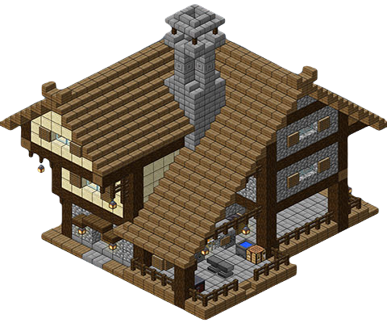

Uvod
Minecraft je sandbox igra koja omogućuje igračima slobodu istraživanja i gradnje.
Igra je kreirana od blokova i pruža mnoštvo mogućnosti za stvaranje, što je čini popularnom među igračima.
Preživljavanje

U preživljavačkom načinu, igrači moraju sakupljati resurse i graditi skloništa.
Cilj je opstati i istraživati svijet, dok se balansira između opasnosti i resursa.
Gradnja
Gradnja je jedan od glavnih dijelova Minecrafta.
Igrači stvaraju strukture svih veličina, od jednostavnih skloništa do kompleksnih gradova.
Modovi
Modovi dodaju nove sadržaje u igru, poput novih svjetova, alata i stvorenja.
Neki modovi su fokusirani na borbu, dok drugi na istraživanje i gradnju.
Vrste modova:
- Modovi za borbu
- Modovi za gradnju
- Modovi za istraživanje
Zajednica
Minecraft zajednica povezuje milijune igrača koji dijele savjete i inspiraciju.
Zajednica je ključan dio iskustva, jer omogućuje razmjenu znanja i podrške.